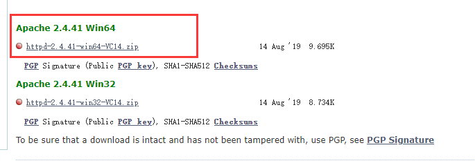
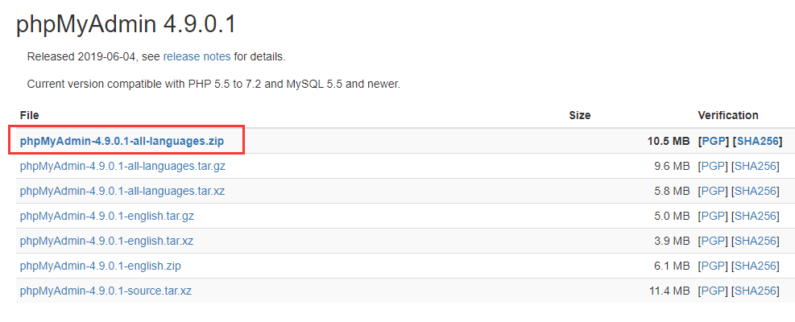
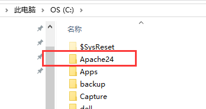
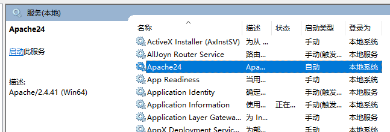
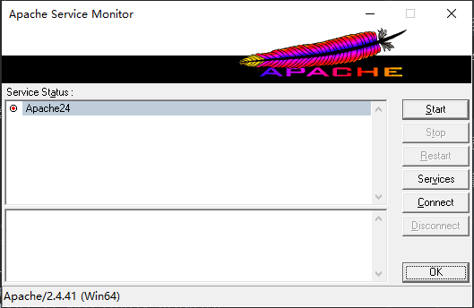
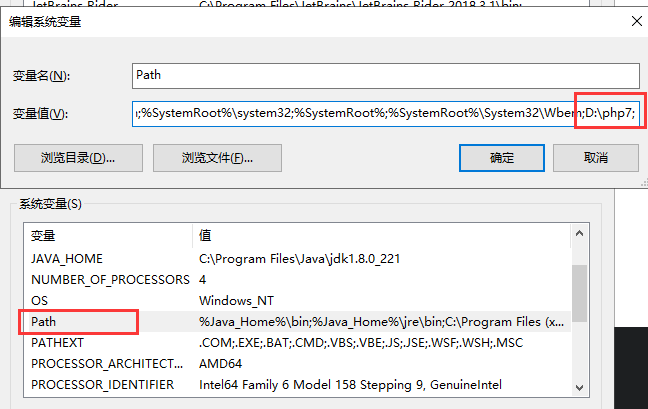
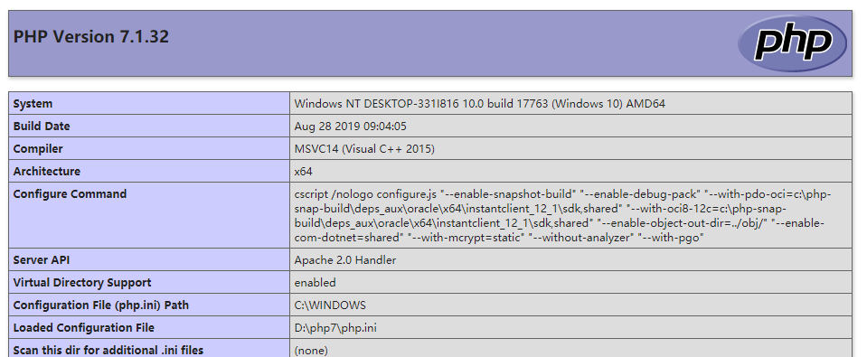

apache2.2不支持php7，会报错
cannot load php7apache2_4.dll into server
前排提示:保证安装文件夹和我的一致可以省事很多哦
apache 2.4 : https://www.apachelounge.com/download/VC14/

phpmyadmin: https://www.phpmyadmin.net/downloads/

apache 和 php的vc版本需注意和自己电脑上安装的VC依赖一致
解压apache2.4 将目录 Apache24剪切到C盘根目录

# If your host doesn't have a registered DNS name, enter its IP address here.
#
ServerName www.example.com:80#Listen 12.34.56.78:80
Listen 80C:\Apache24\bin>httpd.exe -k install -n "Apache24"
Installing the 'Apache24' service
The 'Apache24' service is successfully installed.如上显示就安装成功了。
注意
- 如果不是管理员身份运行cmd，操作时会报错：
httpd.exe -k install -n "Apache24" Installing the 'Apache24' service (OS 5)拒绝访问。- 安装成功后，下面可能显示：
Testing httpd.conf.... Errors reported here must be corrected before the service can be started.这是因为httpd.conf配置出错。后续配置好即可
服务安装成功后即可在系统服务中看到Apache24,如下图所示：

bin目录中找到 ApacheMonitor.exe ,双击运行,启动apache服务

apache24安装成功
验证:在浏览器输入http://localhost，如果显示It Works!，表示Apache安装成功
修改Apache的配置文件，让Apache支持解析PHP文件
在httpd.conf中找到 #LoadModule xml2enc
添加如下:
LoadModule php7_module "D:/php7/php7apache2_4.dll" PHPIniDir "D:/php7"
找到 <IfModule mime_module>,添加AddType application/x-httpd-php .php.如下：
<IfModule mime_module> AddType application/x-httpd-php .php
找到<IfModule dir_module> 在index.html前面添加 index.php。即：
<IfModule dir_module> DirectoryIndex index.php index.html </IfModule>
修改PHP

复制D:\php7\php.ini-development 并重命名为 php.ini，修改如下内容：
找到; extension_dir,添加 extension_dir = "D:/php7/ext".如下：
; extension_dir = "./" ; On windows: extension_dir = "D:/php7/ext"
找到; extension 把需要的扩展前面的注释(;)去掉，下面列出可能需要的扩展
extension=php_bz2.dll
extension=php_curl.dll
extension=php_fileinfo.dll
extension=php_ftp.dll
extension=php_gd2.dll
extension=php_gettext.dll
extension=php_gmp.dll
extension=php_intl.dll
extension=php_imap.dll
extension=php_mbstring.dll
extension=php_mysqli.dll
extension=php_openssl.dll
extension=php_xmlrpc.dll前往C:\Apache24\htdocs目录，建立 index.php,并输入一下内容：
<?php phpinfo(); ?>
访问 http://localhost ，出现如下画面，则成功：

<?php
$con = new mysqli('localhost','root','123456','hongshi');
if(!$con)
die("connect error:".mysqli_connect_error());
else
echo "success connect mysql\n";
$con->close();
?>如果显示：success connect mysql，则访问mysql成功
完成~